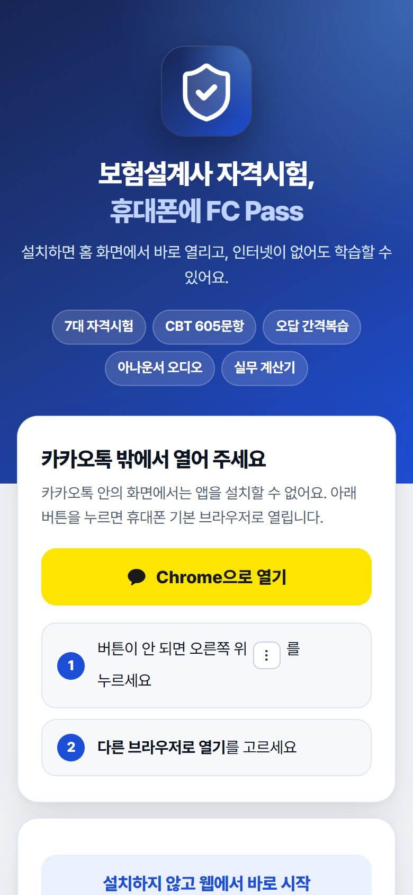
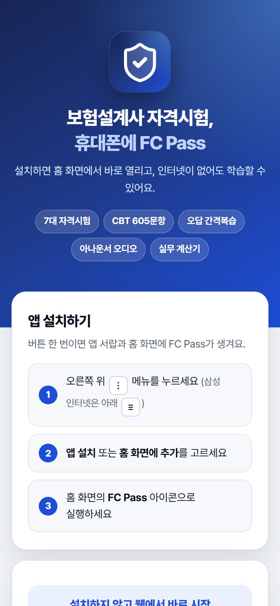
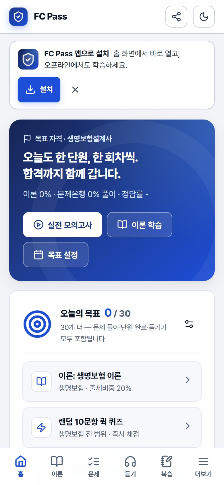
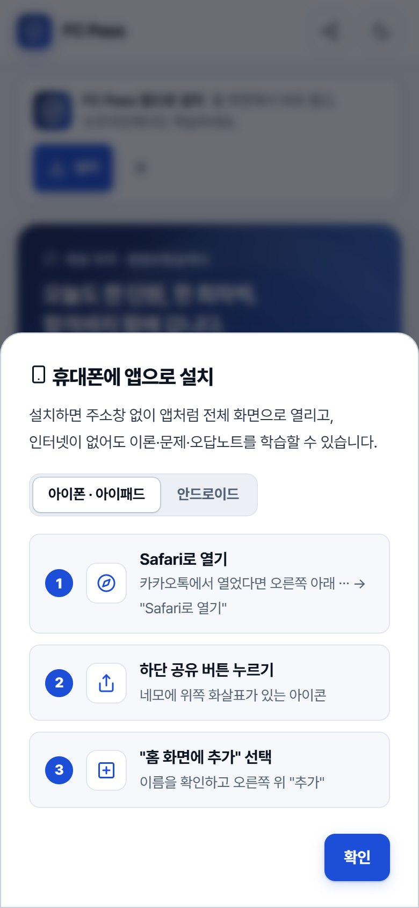
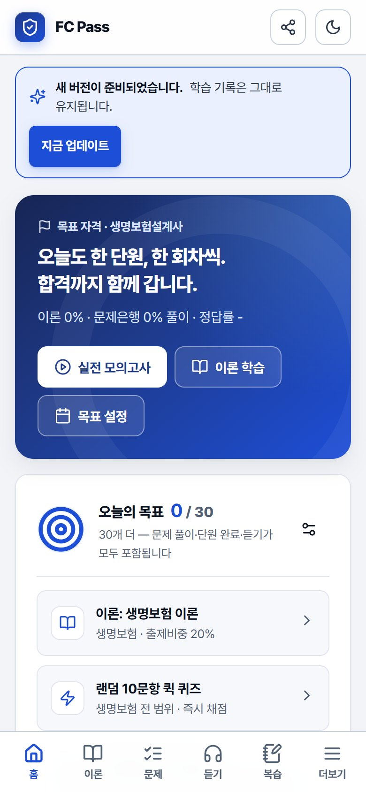

설치 전에 확인
아래 주소 하나로 모든 기기에 설치합니다. 카카오톡으로 받은 링크도 이 주소입니다.
설치 주소https://jh2deity-collab.github.io/anyone-fc-pass/install.html
| 기기 | 사용할 브라우저 | 설치 방법 |
|---|---|---|
| 안드로이드 | Chrome · 삼성 인터넷 | 'FC Pass 설치' 버튼 한 번 (3장) |
| 아이폰 · 아이패드 | Safari (iOS 16.4 이상) | 공유 → 홈 화면에 추가 (4장) |
| PC | Chrome · Edge | 주소창의 설치 아이콘 또는 웹으로 바로 사용 (5장) |
- 앱스토어 설치가 아니라 설치형 웹앱이라 회원가입·결제·권한 요청이 없습니다.
- 학습 기록은 각 기기 안에만 저장됩니다. 서버로 전송되지 않습니다.
- 카카오톡 안의 화면(인앱 브라우저)에서는 설치할 수 없습니다. 2장처럼 기본 브라우저로 열어 주세요.
카카오톡에서 받은 링크 열기
카톡 대화방의 링크를 누르면 카카오톡 안에서 열립니다. 설치 페이지가 이를 알아채고 노란 버튼으로 기본 브라우저를 열어 줍니다.

- 1카카오톡 밖에서 열어 주세요 안내
- 2Chrome으로 열기 / Safari로 열기 — 누르면 기본 브라우저로 이동
- 3버튼이 안 될 때 — 직접 여는 방법
- 노란 브라우저로 열기 버튼을 누릅니다.
- 버튼이 반응하지 않으면 카카오톡 화면의 ⋮(안드로이드, 오른쪽 위) 또는 ⋯(아이폰, 오른쪽 아래)을 눌러 다른 브라우저로 열기 / Safari로 열기를 고릅니다.
- 브라우저에서 같은 설치 페이지가 열리면 3장(안드로이드) 또는 4장(아이폰)으로 넘어가세요.
안드로이드 설치
Chrome 또는 삼성 인터넷에서 설치 페이지를 열면 기기에 맞는 안내가 자동으로 나옵니다.

버튼으로 설치 (권장)
- FC Pass 설치 버튼(①)을 누릅니다.
- 나타나는 창에서 설치를 누릅니다.
- 앱 서랍과 홈 화면에 FC Pass 아이콘이 생깁니다. 아이콘을 눌러 실행하세요.
버튼이 보이지 않을 때 (메뉴로 설치)
- 1안드로이드에 설치하기 안내
- 2단계 안내 — 메뉴 위치
- 3설치하지 않고 웹에서 바로 시작
- Chrome은 오른쪽 위 ⋮, 삼성 인터넷은 아래 ≡ 메뉴를 누릅니다.
- 앱 설치 또는 홈 화면에 추가를 고르고 설치를 누릅니다.
설치 확인홈 화면 아이콘으로 열었을 때 주소창 없이 전체 화면으로 보이면 설치된 것입니다. 아이콘을 길게 누르면 오늘 복습 · 실전 모의고사 · 오디오 학습 바로가기가 나옵니다.
아이폰 · 아이패드 설치
아이폰은 Safari에서 설치합니다. 세 단계면 끝납니다.
- Safari 화면 아래의 공유 버튼(네모에 위쪽 화살표, ①)을 누릅니다.
- 목록을 위로 올려 홈 화면에 추가(②)를 누릅니다.
- 이름이 FC Pass인지 확인하고 오른쪽 위 추가(③)를 누릅니다.
아이폰에서 꼭카카오톡·네이버 앱 안의 화면에서는 '홈 화면에 추가'가 없습니다. 반드시 Safari로 열어 주세요(2장). iOS 16.4 이상을 권장합니다.
처음 실행홈 화면 아이콘을 누르면 파란 시작 화면이 잠깐 보인 뒤 앱이 열립니다.
앱 안에서도 설치 방법을 볼 수 있어요


- 1FC Pass 앱으로 설치 안내
- 2설치 — 설치 방법 창 열기
- 3닫기 — 7일 동안 다시 표시하지 않음
- 1아이폰 / 안드로이드 전환
- 2단계별 안내
PC에서 사용
PC에서는 설치 없이 브라우저로 바로 쓸 수 있습니다. PC에서 설치 페이지를 열면 휴대폰으로 옮겨 갈 QR 코드가 나옵니다.
- 1QR 코드 — 휴대폰 카메라로 비추면 설치 페이지가 열림
- 2설치 주소
- 3PC에서 바로 사용하기
- Chrome·Edge 주소창 오른쪽의 설치 아이콘(⊕ 또는 모니터 모양)을 누르면 PC에도 앱 창으로 설치할 수 있습니다.
- 오디오 학습의 자연스러운 무료 음성(선희·인준)은 Microsoft Edge에서 가장 좋습니다.
업데이트
새 버전이 나오면 앱을 열 때 자동으로 받아 두고, 화면 위에 알림을 띄웁니다. 앱스토어에서 업데이트할 필요가 없습니다.

- 1새 버전이 준비되었습니다
- 2지금 업데이트 — 누르면 새 버전으로 다시 열림
기록은 그대로업데이트해도 학습 기록·오답노트·성적은 유지됩니다. 실전 모의고사를 푸는 중에는 시험이 끝난 뒤 업데이트됩니다.
기기 변경 · 삭제
새 휴대폰으로 옮기기
- 이전 기기의 앱에서 ⚙ 설정 → 백업 파일 저장.
- 새 기기에 앱을 설치(3·4장)한 뒤, ⚙ 설정 → 백업 불러오기로 그 파일을 선택.
자세한 화면은 사용설명서 11장을 참고하세요.
삭제하기
| 기기 | 방법 |
|---|---|
| 안드로이드 | FC Pass 아이콘 길게 누르기 → 제거 (또는 설정 → 애플리케이션) |
| 아이폰 | 아이콘 길게 누르기 → 앱 제거 → 홈 화면에서 제거 |
| PC | 앱 창 오른쪽 위 ⋯ → 제거 |
주의앱을 지우거나 브라우저의 사이트 데이터를 삭제하면 학습 기록도 함께 지워질 수 있습니다. 먼저 백업 파일을 저장하세요.
문제 해결
'설치' 버튼이나 '홈 화면에 추가'가 보이지 않아요.
카카오톡·네이버·인스타그램 앱 안의 화면에서는 설치할 수 없습니다. 안드로이드는 Chrome·삼성 인터넷, 아이폰은 Safari로 열어 주세요. 이미 설치되어 있으면 버튼이 나오지 않습니다.
'브라우저로 열기' 버튼을 눌러도 아무 일이 없어요.
카카오톡 화면의 ⋮ 또는 ⋯ 메뉴에서 다른 브라우저로 열기 / Safari로 열기를 고르세요. 또는 설치 주소를 복사해 브라우저 주소창에 붙여 넣으세요.
"이 브라우저에서는 앱을 실행할 수 없습니다"라고 나와요.
오래된 브라우저입니다. Chrome·Safari·Edge·삼성 인터넷을 최신 버전으로 업데이트한 뒤 다시 열어 주세요(아이폰은 iOS 16.4 이상).
홈 화면 아이콘이 두 개 생겼어요.
같은 앱을 두 번 추가한 것입니다. 하나를 지워도 학습 기록은 남아 있습니다(같은 브라우저 기준).
인터넷 없이 열었더니 화면이 비어 있어요.
설치 직후 한 번은 인터넷에 연결된 상태로 앱을 열어야 오프라인용 파일이 저장됩니다. 연결된 상태에서 한 번 연 뒤 다시 시도하세요.
PC에서 푼 기록이 휴대폰에 없어요.
기록은 기기마다 따로 저장됩니다. 8장의 백업 파일로 옮겨 주세요.
AnyOne FC Pass 3.1 · 설치 매뉴얼 · 사용설명서